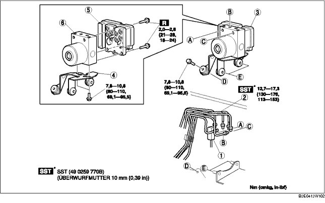

1. Die Batterie und den Batterieträger ausbauen. (Siehe BATTERIE AUSBAUEN/EINBAUEN [ZJ, Z6].) (Siehe BATTERIE AUSBAUEN/EINBAUEN [LF].)
2. Für LHD den Schlauch des Ausgleichsbehälters herausziehen (Fahrzeuge mit Schaltgetriebe). (Siehe Ausbauhinweis für Ausgleichsbehälterschlauch.) (Siehe Ausbauhinweis für Kupplungsleitung und Ausgleichsbehälterschlauch.) (Siehe Einbauhinweis für Ausgleichsbehälterschlauch.) (Siehe Einbauhinweis für Kupplungsleitung und Ausgleichsbehälterschlauch.)
3. Gemäß der Reihenfolge in der Tabelle ausbauen.
4. Der Einbau erfolgt in umgekehrter Reihenfolge.

.
|
1
|
Steckverbinder
(Siehe Ausbauhinweis für Steckverbinder.)
(Siehe Einbauhinweis für Steckverbinder.)
|
|
2
|
Bremsleitung
(Siehe Ausbauhinweis für Bremsleitung.)
(Siehe Einbauhinweis für Bremsleitung.)
|
|
3
|
ABS-Hydraulik-/Steuermodul, Halterung
|
|
4
|
Halterung
|
|
5
|
ABS CM
|
|
6
|
ABS HU
|
1. Die Abdeckung des Steckverbinders in Pfeilrichtung ziehen und dabei die Klauen der Abdeckung zusammenpressen.
2. Den Steckverbinder in Richtung Fahrzeugfront ziehen und entfernen.
1. Eine Richtmarkierung auf der Bremsleitung und dem ABS-Hydraulik-/Steuermodul anbringen.
2. Den Steckverbinder mit Klebeband vor dem Eintritt von Bremsflüssigkeit schützen.
3. Die Bremsleitung ausbauen.
1. Wie abgebildet die Halterung in Pfeilrichtung bewegen und ABS-Hydraulik-/Steuermodul und Halterung entfernen.
1. Die voher angebrachten Markierungen aufeinander ausrictehn und die Bremsleitung wie abgebildet an das ABS-Hydraulik-/Steuermodul anschließen.
1. Nach dem Anschließen des Steckverbinders sicherstellen, dass die Abdeckung des Steckverbinders vollständig eingedrückt wurde.